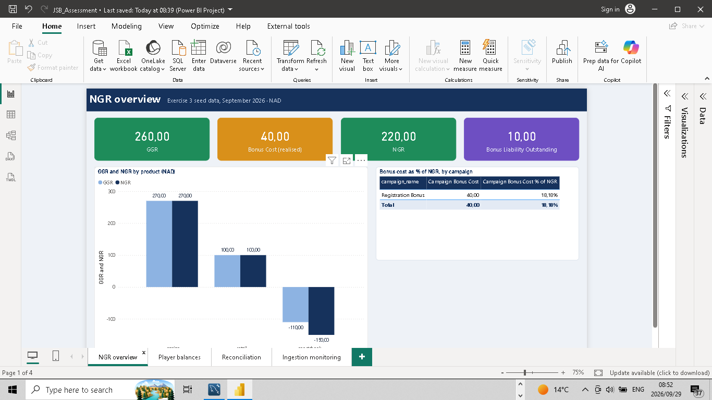
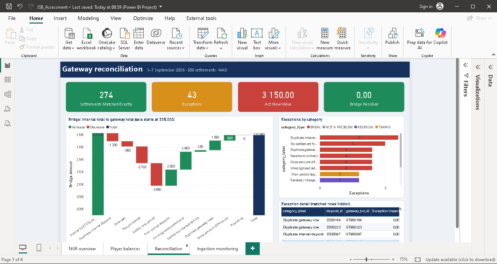
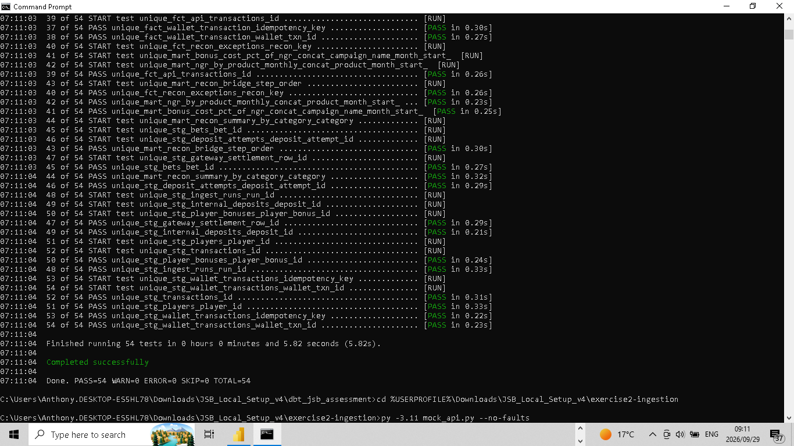
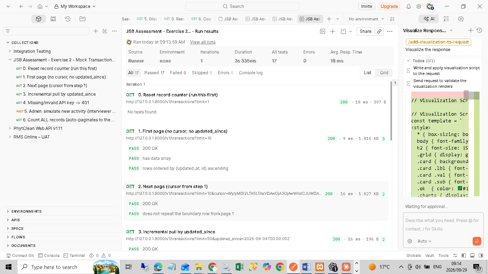
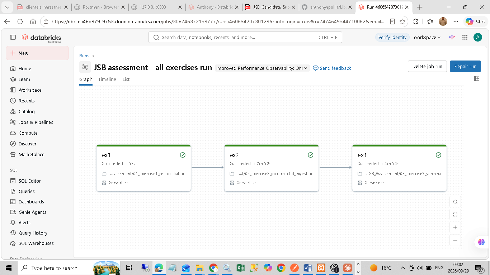
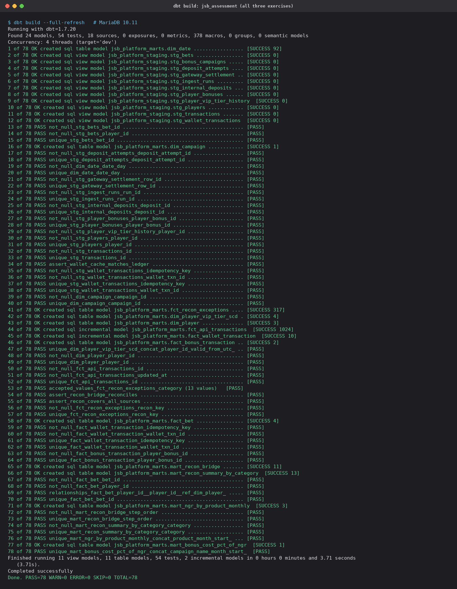

JSB · Data Engineer practical assessment
Three exercises, built and run end to end: a payment gateway reconciliation, an incremental and restartable API ingestion, and a database design for players, wallets, bets and bonuses with a reporting model. Every figure comes from running the code shown. The same work also runs in dbt, Power BI and Databricks.
Each card links to the files that prove it.
MySQL · Python · dbt
Python · MySQL · Postman / Newman
MariaDB · Mermaid ERD
dbt-core 1.7 · MariaDB (MySQL-compatible)
dbt build 78/78: 24 models, 54 testsdbt test 54/54.pbip project · data embedded
Delta Lake · serverless job
The eBook's requirements index (pages 4–5) maps every line of the brief to a section. The page links open the PDF at that page in most browsers.
| Part | Sections | Pages |
|---|---|---|
| Contents and requirements index | Front matter | 2–5 |
| Exercise 1 · Payment gateway reconciliation | §1.1–1.7 | 6–10 |
| Exercise 2 · Incremental, restartable API ingestion | §2.1–2.7 | 11–15 |
| Exercise 3 · Players, wallets, bets and bonuses | §3.1–3.8 | 16–21 |
| Power BI reporting model and report | §4.1–4.4 | 22–26 |
| Databricks version of all three exercises | §5.1–5.2 | 27–28 |
| Files and how to reproduce | Appendix A | 29 |
Genuine captures are from the candidate's Windows PC, cropped to the application only. Rendered images are drawn from real run logs, and the log files are the primary evidence. Every image is listed with its SHA-256 in evidence/README.md.






The ZIP is built reproducibly from one commit and carries a SHA-256 for every file inside it.
| File | JSB_Candidate_Submission_Final.zip · 168 files · 4,585,345 bytes |
|---|---|
| SHA-256 | 7ca97152829b0d94637e1d0d60ec63f101530e550f2b7466fd47fb152b7c4829 |
| Check it | Windows: certutil -hashfile JSB_Candidate_Submission_Final.zip SHA256After unzipping: sha256sum -c MANIFEST.sha256 (PowerShell steps are in START_HERE.md) |
| Provenance | evidence/FINAL_SUBMISSION_ZIP.md |